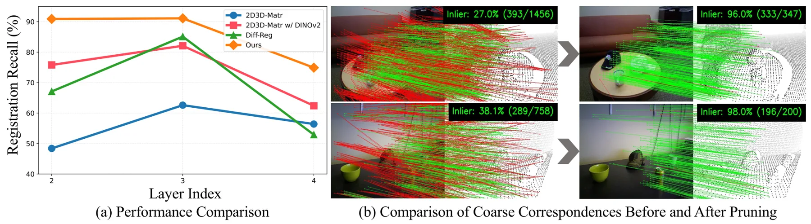
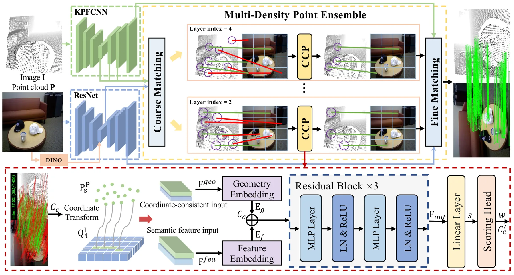
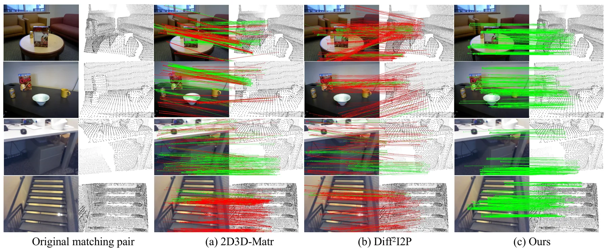
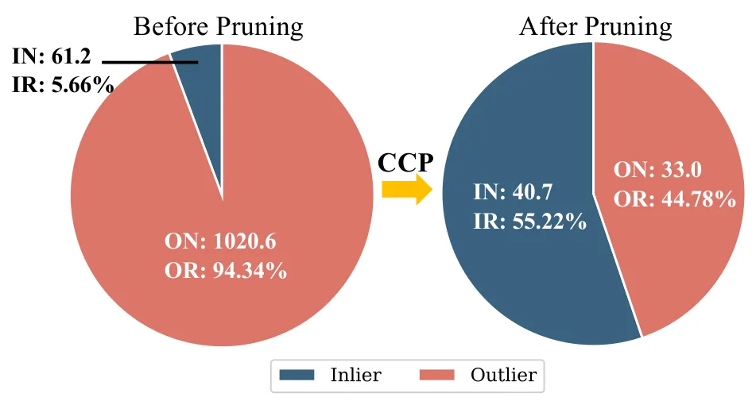
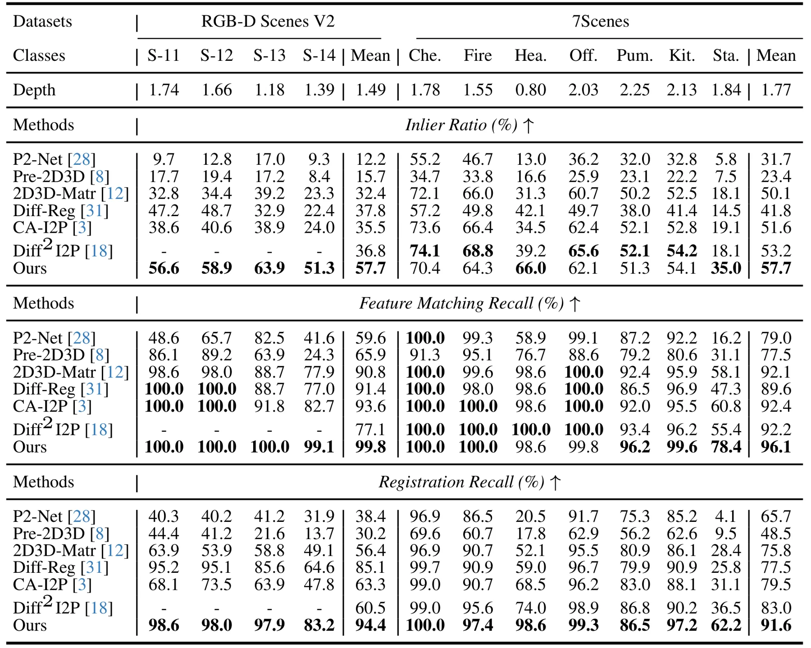
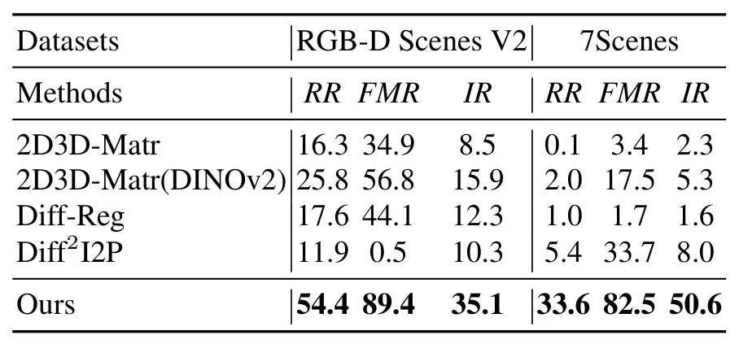
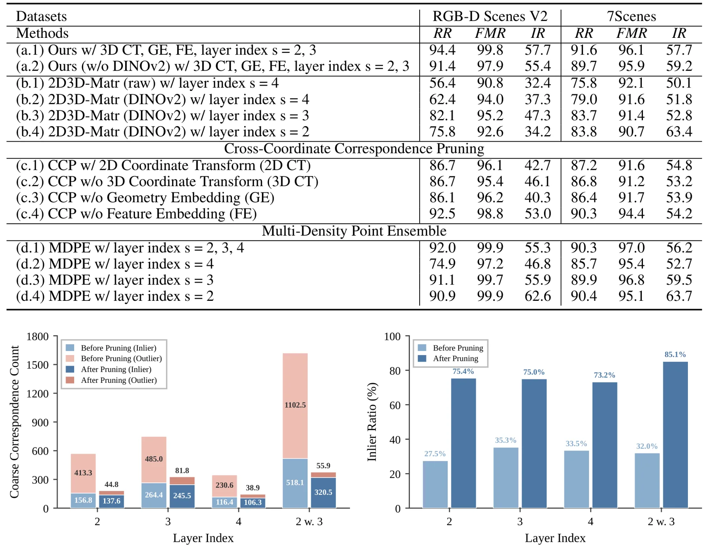

图像—点云配准的跨坐标对应剪枝Cross-Coordinate Correspondence Pruning for Image-to-Point Cloud Registration
与跨模态定位和点云配准直接相关，至少 8.6% Recall 增益突出；需核查绝对精度、速度和密度泛化。
一句话工作总结
统一跨模态对应坐标并融合多密度点云匹配，缓解图像—点云配准中的密度权衡。
摘要
针对图像—点云 detection-free 配准中点云过稀导致 inlier 不足、过密导致 outlier 比例升高的矛盾，本文提出 CCP。方法先把跨坐标粗对应投影至 2D 图像坐标实现空间统一，再由轻量剪枝网络结合坐标几何与模态特征预测 inlier confidence；Multi-Density Point Ensemble 则汇总并去重多种点云密度下的剪枝结果，以提高 inlier recall。多个 benchmark 上 Registration Recall 至少超过现有 SOTA 8.6%。
Recent detection-free approaches have shown significant efficacy in image-to-point cloud (I2P) registration by employing a coarse-to-fine matching pipeline. In the coarse stage, down-sampled image features and voxelized point cloud features are typically fused to establish initial coarse correspondences for subsequent refinement. However, existing methods largely overlook the critical role of point cloud density, which fundamentally dictates the quality of coarse correspondences and the final registration results. Specifically, excessively sparse point clouds lead to an insufficient number of inliers, while overly dense ones often introduce a high outlier ratio. Consequently, this creates an inherent density trade-off, thereby significantly limiting the registration accuracy of current approaches. For mitigating this trade-off, we propose a novel Cross-Coordinate Correspondences Pruning (CCP) strategy to acquire sufficient inliers while ensuring a low outlier ratio. To minimize interference from inter-modal coordinate discrepancies, we first project cross-coordinate coarse correspondences to the 2D image coordinate system for spatial unification. Subsequently, a lightweight pruning network is responsible for predicting the inlier confidences, which are used to filter coarse outliers, from coordinate geometric and modal feature dimensions. To maximize inlier recall, we further design a Multi-Density Point Ensemble (MDPE) strategy that consolidates and deduplicates pruned coarse correspondences across varying point cloud densities. Our method achieves a significant performance improvement, surpassing existing state-of-the-art methods by at least 8.6% in Registration Recall across various benchmarks.
中文解读摘录
- 作者：Xin Liu, Rong Qin, Huipeng Lin, Leizhi Shu, Jin Wu, Chi-Man Vong, Liang Lin, Jufeng Yang
- 价值判断：正面处理点云过稀导致 inlier 不足、过密导致 outlier 比例过高的密度权衡。
- 技术要点：将跨模态粗对应投影到统一 2D 坐标，以轻量网络从坐标几何和模态特征预测 inlier confidence；再通过 Multi-Density Point Ensemble 合并去重不同密度的结果。
- 关键结果：在多个 benchmark 上 Registration Recall 至少领先现有 SOTA 8.6%。
- 链接：arXiv · PDF
图表/页面预览
{kind=link}

{kind=link}

{kind=link}

{kind=link}

{kind=link}

{kind=link}

{kind=link}
